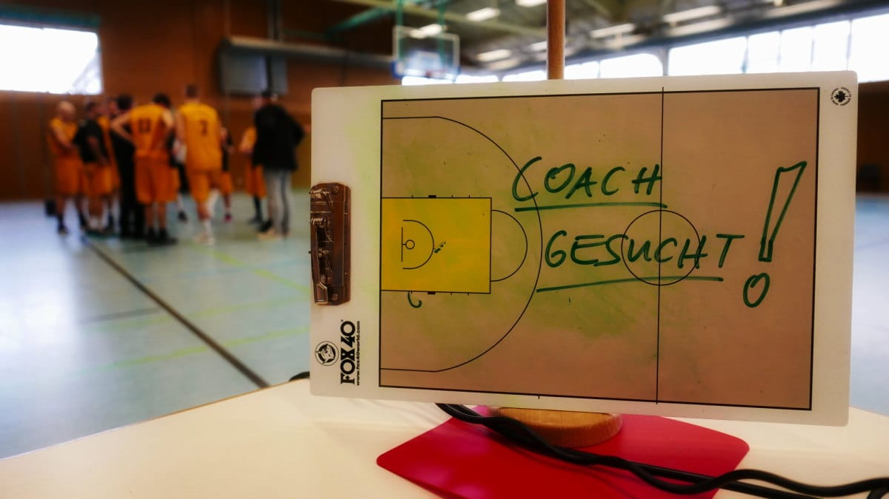
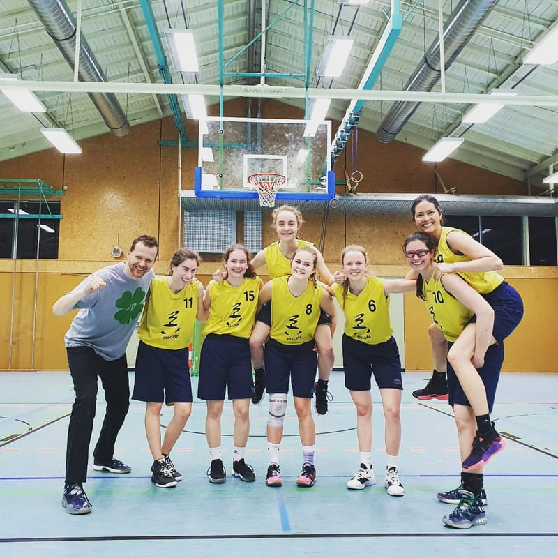

Jahreshauptversammlung 2021 der Basketball-Abteilung am 24. Juli
Einladung für die Mitglieder der Basketball-Abteilung zu unserer Jahreshauptversammlung 2021
Liebe Basketball-Abteilung,
der Termin für unsere diesjährige Hauptversammling steht fest. Die Sitzung findet statt am Datum: Samstag, 24. Juli 2021, um 14:00 Uhr (bis ca. 18:00 Uhr), Ort: TB 1888 Erlangen e.V. – Vereinsgaststätte, Spardorfer Str. 79, 91054 Erlangen
Tagesordnung:
- Zusammenfassung Jahr 2020
- Kassenbericht zum Jahr 2020
- Entlastung der ...
Es geht wieder los!
Bedingt durch die Pandemie mussten wir lange auf unseren Teamsport verzichten - aber nach einer langen Zeit des Lockdowns und der geschlossenen Hallen heißt es seit dem Beginn der Pfingstferien bereits: Wir sind zurück auf dem Court!
Wir trainieren während der Sommerzeit überwiegend auf den Outdoor-Plätzen vom Turnerbund mit unseren Teams. Wer bei uns mitmachen oder einfach mal ausprobieren möchte ist immer herzlich willkommen! Am besten vorher einfach über unser Kontaktformular eine kurze ...
Jahreshauptversammlung 2020 der Basketball-Abteilung am 20. September
Einladung für die Mitglieder der Basketball-Abteilung zu unserer Jahreshauptversammlung 2020
Datum: 20. September 2020, um 11:00 Uhr (bis ca. 13:00 Uhr), Ort: TB 1888 Erlangen e.V. – Vereinsgaststätte, Spardorfer Str. 79, 9054 Erlangen
Tagesordnung:
- Zusammenfassung Jahr 2019
- Kassenbericht zum Jahr 2019
- Entlastung der Abteilungsleitung
- Etat und Planungen 2020
- Anträge (bitte bis zum 10.09.2020 an den ...
Unser Trainerteam sucht Unterstützung!

Du bist engagiert, zuverlässig und natürlich ein wenig so richtig basketballverrückt? Du suchst Spaß, bist bereit, viel zu geben und viel gemeinsam zu erleben? Du willst mit einem Team Ziele erreichen, egal ob mit Jungs, Mädchen, Damen oder einer Herrenmannschaft? Dann runter vom Sofa und rauf aufs Parkett, denn: Wir suchen Verstärkung im Trainerteam im Jugendbereich.
Du bist interessiert? Dann ...
* Update Corona / COVID-19 * Keine Aktivitäten bis 19. April
Liebe Basketballgemeinde,
aufgrund der zunehmenden Verbreitung des Corona / COVID-19 Virus werden zunächst bis zum 19. April 2020 alle Aktivitäten der Basketballabteilung eingestellt. Von dieser Entscheidung sind sowohl die Trainings- und Spielzeiten betroffen als auch die Benutzung der Basketballplätze auf dem Aussengelände vom Turnerbund Erlangen (siehe auch https://turnerbund.de/news/corona-situation-am-tb/).
Neben den ...
* Kein Spielbetrieb und kein Training aufgrund Corona / COVID-19 *
Liebe Basketballgemeinde,
Aufrund der Absage der laufenden Spielbetriebs auf Bezirks- und Verbandsebene findet auch erstmal kein Training unserer Teams statt, um die Verbreitung des Corona-Virus zu verlangsamen.
Am Wochenende wird die Abteilungsleitung gemeinsam mit den Trainerinnen alles weitere besprechen.
Klaus Thielking-Riechert Abteilungsleiter
D1: Nach zäher erster Halbzeit, zünden die Damen 1 den Turbo bezwingen Neumarkt deutlich

Knappe erste Hälfte, geschickte Defenseumstellung, deutliches Endergebnis - So lässt das Spiel der Damen 1 vom Sonntag gegen die Fibalon Baskets Neumarkt in Kürze zusammenfassen.
Nach einem angespannten Start blieben beide Teams über die gesamte erste Halbzeit auf Augenhöhe. Erlangen spielte geduldig und schnell, traf gute Entscheidungen und ...